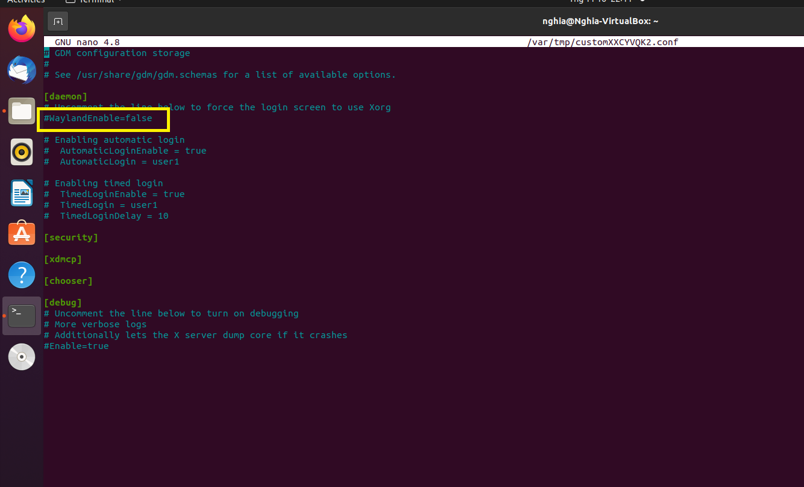
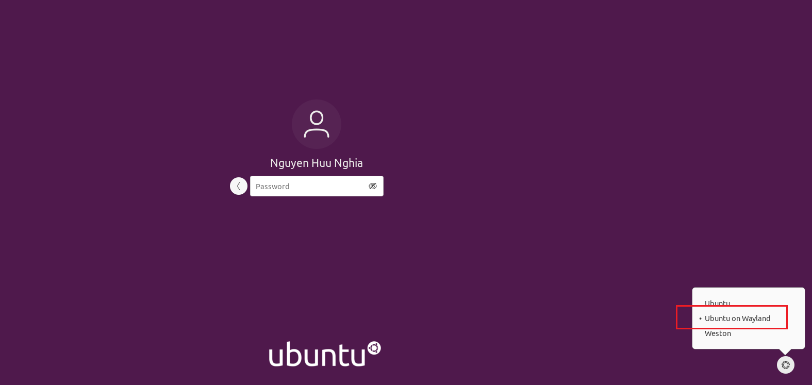

How to Set up¶
This guide is made for Ubuntu 20.04. However you can try it with different Linux distros with Wayland display server follow the same steps.
Assuming, you have a clean Ubuntu 20.04 installed, please perform the following steps:
Environment Setup¶
Install build tools
$ sudo apt install gcc g++ make cmake
Install libpgm to be able to build ZeroMQ with PGM/ePGM support
$ sudo apt install libpgm-5.2-0 libpgm-dev
Install ZeroMQ with PGM/ePGM support
$ wget https://github.com/zeromq/libzmq/releases/download/v4.3.4/zeromq-4.3.4.tar.gz
$ tar -xf zeromq-4.3.4.tar.gz
$ cd ~/zeromq-4.3.4/
$ ./configure --with-pgm
$ make
$ sudo make install
Install virglrenderer
$ sudo apt install libvirglrenderer1 libvirglrenderer-dev
Install Weston compositor
$ sudo apt install libvirglrenderer1 libvirglrenderer-dev \
libjpeg-dev libwebp-dev libsystemd-dev libpam-dev libva-dev freerdp2-dev \
libxcb-composite0-dev liblcms2-dev libcolord-dev libgstreamer1.0-dev \
libgstreamer-plugins-base1.0-dev libpipewire-0.2-dev libxml2-dev meson \
libxkbcommon-x11-dev libpixman-1-dev libinput-dev libdrm-dev wayland-protocols \
libcairo2-dev libpango1.0-dev libdbus-1-dev libgbm-dev libxcursor-dev
$ wget https://github.com/wayland-project/weston/archive/8.0.93.tar.gz
$ tar -xf 8.0.93.tar.gz
$ cd ~/weston-8.0.93/
$ meson build/
$ ninja -C build/ install
Install mesa 18.2.0 with virgl support to a separate /usr/lib/mesa-virtio folder
$ sudo apt install llvm libwayland-egl-backend-dev libxcb-glx0-dev libx11-xcb-dev \
libxcb-dri2-0-dev libxcb-dri3-dev libxcb-present-dev libxshmfence-dev \
libgbm-dev libsdl2-dev libgtk-3-dev libgles2-mesa-dev libpixman-1-dev \
libtool autoconf libdrm-dev python libinput-dev libwayland-egl-backend-dev \
glmark2-es2-wayland
$ wget https://archive.mesa3d.org//mesa-18.2.0.tar.xz
$ tar -xf mesa-18.2.0.tar.xz
$ cd ~/mesa-18.2.0/
$ patch -p1 < ../remote-virtio-gpu/data/mesa/0001-glBufferData-Update-resource-backing-memory.patch
$ ./configure --prefix=/usr/lib/mesa-virtio
--exec_prefix=/usr/lib/mesa-virtio \
--libdir=/usr/lib/mesa-virtio \
--includedir=/usr/include/mesa-virtio \
--sysconfdir=/etc/mesa-virtio \
--datadir=/usr/share/mesa-virtio \
--with-dri-drivers=swrast \
--with-gallium-drivers=swrast,virgl \
--enable-dri3=yes \
--with-platforms=drm,wayland,x11 \
--disable-glx
$ make
$ sudo make install
Linux kernel update¶
If you don’t have remote-virtio-gpu on your PC, follow these steps to get it:
$ cd $HOME
$ git clone T.B.D
Now you need to apply your own patch to the Linux kernel for remote-virtio-gpu vsync enabled.
Get the Linux kernel souce code, which must be compatible with your Linux distro, for performing build and generate the necessary deb files.
Here, we get the kernel version 5.8.18 for Ubuntu 20.04.
$ cd /usr/src
$ sudo apt-get install -y build-essential libncurses5-dev \
gcc libssl-dev grub2 bc bison flex libelf-dev
$ sudo wget https://cdn.kernel.org/pub/linux/kernel/v5.x/linux-5.8.18.tar.xz
$ sudo tar -xf linux-5.8.18.tar.xz
$ cd linux-5.8.18
$ patch -p1 < ~/remote-virtio-gpu/data/linux-kernel/0001-drm-virtio-Add-VSYNC-support.patch
$ cp /boot/config-5.8.0-50-generic .config # Other versions of config are acceptable
$ vim .config # comment this line CONFIG_SYSTEM_TRUSTED_KEYS=""
$ make menuconfig # save config
$ make -j8 deb-pkg
After that, some deb packages should be under /usr/src directory:
- linux-headers-5.8.18_5.8.18-1_amd64.deb
- linux-image-5.8.18_5.8.18-1_amd64.deb
- linux-image-5.8.18-dbg_5.8.18-1_amd64.deb
- linux-libc-dev_5.8.18-1_amd64.deb
Install packages:
$ dpkg –i linux-*.deb
$ update-grub
If there are no problems, restart your PC
$ sudo reboot
Make sure the Kernel is updated after reboot. Check Kernel version:
$ uname -r
Install remote-virtio-gpu¶
Build and install remote-virtio-gpu library
$ cd ~/remote-virtio-gpu
$ mkdir build
$ cmake -B build -DCMAKE_BUILD_TYPE=Release -DVIRTIO_LO_DIR=../rvgpu-driver-linux
$ make -C build
$ sudo make install -C build
Ubuntu Wayland Switch¶
As a prerequisite, you need to log in with Ubuntu on Wayland. Follow these steps for switching to Ubuntu on Wayland:
Step 1: Asuming that GDM3 is your default display manager, edit the /etc/gdm3/custom.conf to enable Wayland:
$ sudoedit /etc/gdm3/custom.conf
Make sure you comment the line WaylandEnable=false:
Step 2: Restart GDM3 or reboot your Ubuntu desktop:
$ sudo systemctl restart gdm3
Step 3: To login to Ubuntu using the Wayland, click on the gear button and select Ubuntu on Wayland option before you login.
